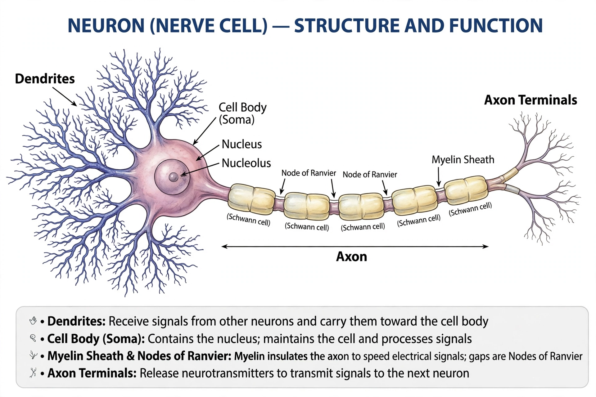

Neuron

[Image: diagram of a neuron showing dendrites, cell body, axon and myelin sheath]A neuron (nerve cell) is an electrically excitable cell that communicates with other cells via specialised connections called synapses, and is the main signalling unit of the nervous system. Neurons process and transmit information as electrochemical signals, forming the networks whose activity underlies sensation, movement, memory and thought.
A typical neuron has a cell body (soma) containing the nucleus, branching dendrites that receive inputs, and a long axon that carries the output signal — often wrapped in an insulating myelin sheath that speeds conduction. The human brain contains on the order of 86 billion neurons, connected by roughly a hundred trillion synapses.
Signalling
A neuron at rest maintains a voltage across its membrane. When input pushes it past threshold, an action potential — a travelling wave of ion flow through channel proteins — fires down the axon. At the synapse, the signal usually crosses chemically: neurotransmitter molecules (glutamate, dopamine, serotonin, GABA and others) are released and bind receptors on the next cell.
Plasticity and disease
Synaptic strengths change with use — the basis of learning, famously summarised as 'cells that fire together wire together'. Neuron death or dysfunction drives many diseases: Alzheimer's disease, Parkinson's disease, motor neurone disease, and the demyelination of multiple sclerosis. Unlike most cells, mature neurons rarely divide, limiting repair after injury or stroke.